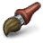

<?php echo '<?xml version="1.0" encoding="UTF-8"?>
'; ?>
<!DOCTYPE html PUBLIC "-//W3C//DTD XHTML 1.1//EN"
	"http://www.w3.org/TR/xhtml11/DTD/xhtml11.dtd">
<html xml:lang="de" xmlns="http://www.w3.org/1999/xhtml">
	<head>
		<!--<base href="http://czaplewski.name/screentaker/dokumentation/"/>-->
		<meta name="author" content="Witold Czaplewski"/>
		<meta http-equiv="content-style-type" content="text/css"/>
		<meta http-equiv="expires" content="0"/>
		<meta http-equiv="content-type" content="text/html; charset=utf-8"/>
		<meta name="copyright" content="Copyright C 2007 Witold Czaplewski"/>
		<meta name="description" content="Screentaker.NET ist ein frei verfügbares unter der GNU General Public License stehendes Werkzeug zur Erstellung, Speicherung sowie Weitergabe von Screenshots"/>
		<meta name="keywords" content="Screentaker.NET, Screenshots, Bilder, Upload, OpenSource, C#, Windows, Vista, Benutzerhandbuch, Dokumentation"/>
		<meta name="robots" content="index, follow"/>
		<link rel="stylesheet" type="text/css" href="css/main.css" media="Screen,Projection,TV"/>
		<style type="text/css">
			/*<![CDATA[*/@import url(css/main.css) screen; /*]]>*/
		</style>
		<title>Screentaker.NET :: Spenden</title>
	</head>
	<body dir="ltr">
		<div id="head"> 
			
			<h1>Spenden</h1>
			<ul id="index">
				<li>
					<a href="index.html#intro" title="Screentaker.NET Dokumentation">Dokumentation</a>
				</li>
			</ul>
		</div>

		<div id="content">
			<fieldset style="width: 200px; margin: 2px auto; text-align: center">
				<legend><strong>Spenden</strong></legend>
			</fieldset>
		</div>
		<div id="footer">
			<p>
				&copy; 2007 Witold Czaplewski &amp; Christian Kratky |
				<a href="http://czaplewski.name/screentaker/dokumentation" title="Screentaker.NET Dokumentation">Dokumentation</a> |
				<a href="http://czaplewski.name/screentaker/dokumentation/impressum.html" title="Screentaker.NET Impressum">Impressum</a> |
				<a href="http://www.validome.org/referer" title="HTML / XHTML / WML / XML Validator">XHTML 1.1</a> |
				<a href="http://jigsaw.w3.org/css-validator/check/referer">CSS 3</a>
			</p>
		</div>
	</body>
</html>